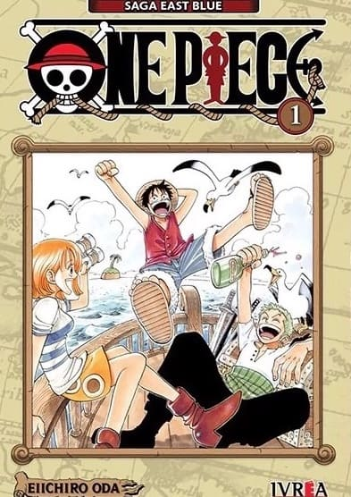

One Piece

One Piece relata las aventuras de Monkey D. Luffy, un joven que, inspirado en Shanks, un pirata que le salvó la vida,
desea convertirse en el Rey de los Piratas y encontrar el tesoro conocido como One Piece, que pertenecía a Gol D. Roger,
quien antes de ser ejecutado, hace 24 años, contó al mundo sobre la existencia de su tesoro.
Esto dio inicio a lo que se conoce como "la Gran era de los piratas": innumerables piratas se dispusieron a buscar ese
tesoro, causando grandes problemas al Gobierno Mundial.
Luffy iniciará sus aventuras, reclutando amigos y nakamas que lo ayuden a cumplir su sueño.